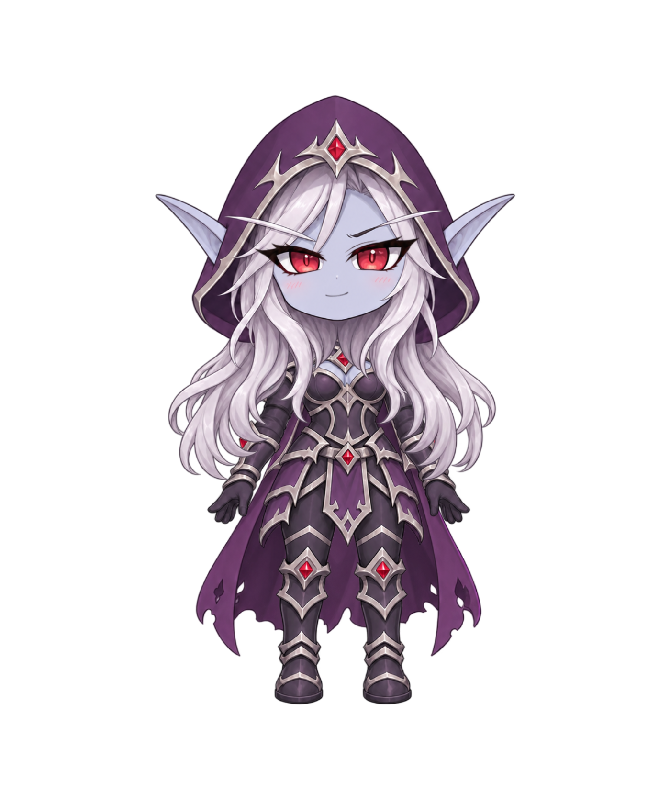
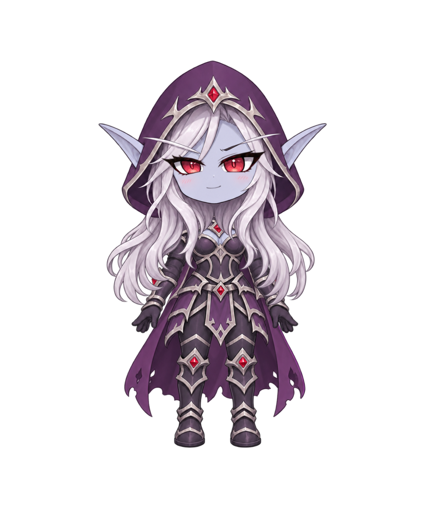

左上
{"ParamBreath":0,"ParamEyeLOpen":1,"ParamEyeROpen":1,"ParamMouthOpenY":0,"ParamEyeBallX":-0.905,"ParamEyeBallY":0.902}上

{"ParamBreath":0,"ParamEyeLOpen":1,"ParamEyeROpen":1,"ParamMouthOpenY":0,"ParamEyeBallX":0,"ParamEyeBallY":0.902}右上
{"ParamBreath":0,"ParamEyeLOpen":1,"ParamEyeROpen":1,"ParamMouthOpenY":0,"ParamEyeBallX":0.905,"ParamEyeBallY":0.902}左

{"ParamBreath":0,"ParamEyeLOpen":1,"ParamEyeROpen":1,"ParamMouthOpenY":0,"ParamEyeBallX":-0.905,"ParamEyeBallY":0}中心

{"ParamBreath":0,"ParamEyeLOpen":1,"ParamEyeROpen":1,"ParamMouthOpenY":0,"ParamEyeBallX":0,"ParamEyeBallY":0}右
{"ParamBreath":0,"ParamEyeLOpen":1,"ParamEyeROpen":1,"ParamMouthOpenY":0,"ParamEyeBallX":0.905,"ParamEyeBallY":0}左下
{"ParamBreath":0,"ParamEyeLOpen":1,"ParamEyeROpen":1,"ParamMouthOpenY":0,"ParamEyeBallX":-0.905,"ParamEyeBallY":-0.902}下
{"ParamBreath":0,"ParamEyeLOpen":1,"ParamEyeROpen":1,"ParamMouthOpenY":0,"ParamEyeBallX":0,"ParamEyeBallY":-0.902}右下
{"ParamBreath":0,"ParamEyeLOpen":1,"ParamEyeROpen":1,"ParamMouthOpenY":0,"ParamEyeBallX":0.905,"ParamEyeBallY":-0.902}